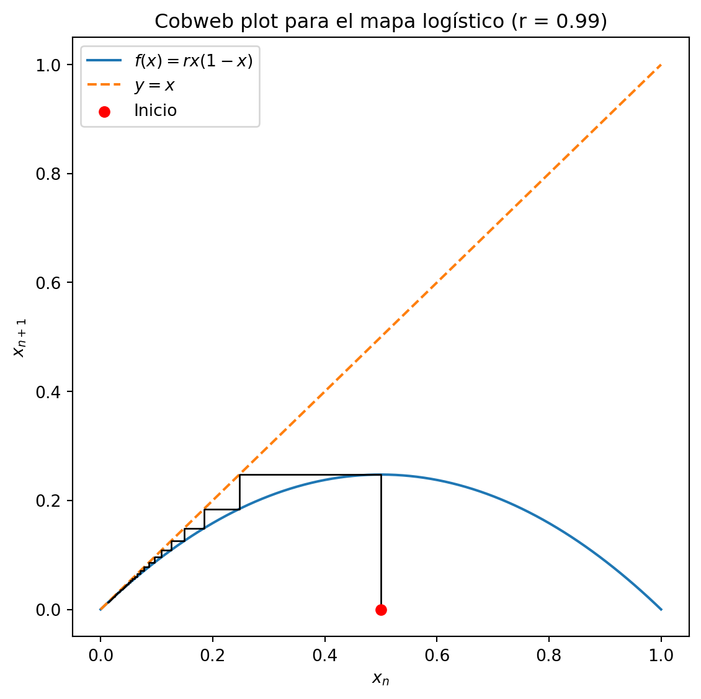
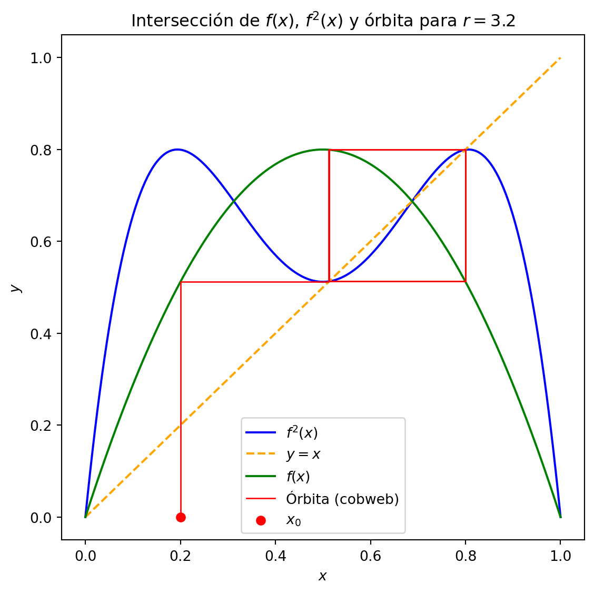

8 Primera bifurcación
Tal y como vimos en la sección anterior cuando \(r > 3\) el valor final de la sucesión logística alterna entre dos valores finales. Vamos a hacer un análisis matématico para explicar por qué pasa ésto.
8.1 Primera bifurcación: duplicación de período en \(r = 3\). Análisis matemático
En \(r = 3\), la derivada en el punto fijo \(x^* = 1 - \frac{1}{r}\) se vuelve \(-1\), lo cual genera una órbita de período 2, tal y como hemos visto en el apartado anterior.
Surgen dos nuevos puntos \(p\) y \(q\) que no son puntos fijos, sino puntos de período 2 tales que:
\[ f(p) = q, \quad f(q) = p \]
Es decir, si al mapa logístico se le alimenta con un valor \(p\), da como resultado un valor \(q\), que al ser metido otra vez en el mapa logístico da el valor \(p\) inicial.
Esto significa que:
\[ f(f(p)) = p \]
Lo cual implica que \(p\) es un punto fijo del mapa iterado \(f^2\) (esta notación significa la composicion de una función con sigo misma \(f^2()=f \circ f = f(f())\), no el cuadrado de la función)
Dado que \(f(x) = r x (1 - x)\), podemos escribir:
\[ f(p) = r p (1 - p) \]
Entonces:
\[ f(f(p)) = r \cdot f(p) \cdot (1 - f(p)) = r \cdot [r p (1 - p)] \cdot \left[1 - r p (1 - p)\right] \]
Queremos encontrar los puntos de período 2, así que igualamos:
\[ f(f(p)) = p \]
Hay que observar, que la resolución gráfica es sencilla. Simplemente hay que dibujar la función \(f^2()=f \circ f = f(f())\) y la función \(y=x\), y encontrar los cruces de ambas. Se cortarán en dos puntos, que serán los puntos entre los que alternará el mapa logístico.
Sigamos con la resolución analtíca. Para ello, desarrollamos completamente \(f(f(p)) = p\):
\[ r^2 p (1 - p)(1 - r p (1 - p)) = p \]
Pasando todo al mismo lado:
\[ r^2 p (1 - p)(1 - r p (1 - p)) - p = 0 \]
Factorizamos \(p\):
\[ p \left[ r^2 (1 - p)(1 - r p (1 - p)) - 1 \right] = 0 \]
Una de las soluciones es \(p = 0\) (punto fijo trivial), pero las otras soluciones corresponden a los puntos de período 2.
Expandimos el polinomio:
\[ f(f(p)) = r^2 p (1 - p)(1 - r p (1 - p)) = p \]
Expandimos paso a paso:
- \(f(p) = r p (1 - p)\)
- \(1 - f(p) = 1 - r p (1 - p)\)
- \((1 - p)(1 - r p (1 - p)) = 1 - p - r p (1 - p) + r p^2 (1 - p)\)
- Multiplicamos todo por \(r^2 p\)
- Resulta en un polinomio de cuarto grado en \(p\)
Este polinomio tiene hasta 4 raíces reales, de las cuales dos corresponden a los nuevos puntos de período 2. Las otras dos pueden ser los puntos fijos ya conocidos o raíces no relevantes dinámicamente.
8.2 Análisis gráfico
Vamos a proceder al análisis gráfico. Para empezar vamos a poner un mapa logístico con \(r=2.9\). Sabemos que para este valor la sucesión converge a un punto. Esto lo vemos porque la función logística corta con la recta \(y=x\) en un punto cuya pendiente en valor absoluto es menor que 1, y porque además en ese punto corta también la segunda iterada \(f \circ f\). La recta \(y=x\) solo corta en un punto a la segunda iterada, por lo tanto no hay alternancia entre dos puntos.
Y ahora veamos lo que pasa cuando \(r=3.2\). En este caso, la segunda iteración corta con la recta \(y=x\) en dos puntos. Tal y como vemos en el diagrama de telaraña son estos dos puntos entre los que oscila el valor final del mapa logístico.

8.3 Analisis de estabilidad de la primera bifurcación
En primer lugar, vamos a calcular de nuevo de forma analítica precisa los puntos en los que se produce la oscilación. La función logística es
\[
f(x) = rx(1 - x),
\]
y su iteración doble se define como
\[
f^{(2)}(x) = f\bigl(f(x)\bigr).
\]
Queremos hallar los valores de \(x\) que satisfacen
\[
f^{(2)}(x) = x.
\]
8.3.1 Expresión explícita de \((f^{(2)}(x))\)
Primero calculamos
\[
f(x) = r x - r x^2.
\]
Luego
\[
f\bigl(f(x)\bigr)
= r\bigl(f(x)\bigr)\bigl(1 - f(x)\bigr)
= r\bigl(r x - r x^2\bigr)\bigl(1 - (r x - r x^2)\bigr)
\]
Por tanto
\[
f^{(2)}(x)
= r\,(r x - r x^2)\,(1 - r x + r x^2)
= r^2\,x\,(1 - x)\,(1 - r x + r x^2)
\] En vez de expresar la segunda iteración como un polinomio de grado 4, lo dejamos en función de dos monomios y un binomio.
8.4 Primera bifurcación: obtención de los puntos fijos de periodo 1 y 2
8.4.1 Definición de la función y de su iterada doble
La función logística es
\[
f(x) = r\,x\,(1 - x)\,.
\]
Su segunda iterada (composición consigo misma) se escribe
\[
f^{(2)}(x) = f\bigl(f(x)\bigr)\,.
\]
Queremos resolver
\[
f^{(2)}(x) - x = 0,
\]
que es un polinomio de grado 4 en (x).
8.4.2 Puntos de periodo 1 (puntos fijos de (f))
Localizamos los puntos de periodo 1, es decir, las raíces de
\[
f(x) - x = r\,x\,(1 - x) - x = 0.
\]
Factorizando:
\[
r\,x\,(1 - x) - x
= x\bigl[r\,(1 - x) - 1\bigr]
= 0.
\]
De aquí salen dos soluciones:
\[
x = 0,
\qquad
x = \frac{r-1}{r}.
\]
8.4.3 Construcción del polinomio de grado 4
Para la segunda iterada:
\[
\begin{aligned}
f^{(2)}(x)
&= r\bigl(f(x)\bigr)\bigl(1 - f(x)\bigr)
= r\bigl(r\,x - r\,x^2\bigr)\bigl[1 - (r\,x - r\,x^2)\bigr]\\[6pt]
&= r^2\,x\,(1 - x)\,(1 - r\,x + r\,x^2).
\end{aligned}
\]
Por tanto,
\[
f^{(2)}(x) - x
= r^2\,x\,(1 - x)\,(1 - r\,x + r\,x^2) - x.
\]
8.4.4 División polinómica para aislar el factor de periodo 2
Primero, observemos que si \[x^*\] es un punto fijo de \[f\], es decir, \[ f(x^*) - x^* = 0, \] entonces \[ f^{(2)}(x^*) - x^* = f\bigl(f(x^*)\bigr) - x^* = f(x^*) - x^* = 0. \] Por tanto, toda raíz de \[f(x)-x\] es también raíz de \[f^{(2)}(x)-x\], lo que en términos de polinomios equivale a afirmar que \[ f^{(2)}(x)-x \quad\text{es divisible por}\quad f(x)-x. \]
Queremos dividir
\[
P(x) \;=\; f^{(2)}(x)-x
\;=\; -\,r^3x^4 + 2r^3x^3 - r^2(r+1)x^2 + (r^2-1)x
\] entre
\[
D(x) \;=\; f(x)-x
\;=\; -\,r\,x^2 + (r-1)x.
\]
Dividimos el término de mayor grado de (P(x)) entre el de (D(x)): \[
\frac{-\,r^3x^4}{-\,r\,x^2}
\;=\;
r^2x^2.
\]
Multiplicamos y restamos: \[
r^2x^2\cdot D(x)
= -\,r^3x^4 + r^2(r-1)x^3,
\] \[
P(x)-\bigl(r^2x^2\cdot D(x)\bigr)
= (r^3+r^2)x^3 \;-\; r^2(r+1)x^2 \;+\;(r^2-1)x.
\]
Dividimos el nuevo término principal entre el de (D(x)): \[
\frac{(r^3+r^2)x^3}{-\,r\,x^2}
\;=\;
-\,(r^2+r)x.
\]
Multiplicamos y restamos: \[
-\,(r^2+r)x\cdot D(x)
= -\,(r^3+r^2)x^3 + (r^3-r)x^2,
\] \[
\bigl[(r^3+r^2)x^3 - r^2(r+1)x^2 + (r^2-1)x\bigr]
-
\bigl[-(r^3+r^2)x^3 + (r^3-r)x^2\bigr]
= -\,(r^2+r)x^2 + (r^2-1)x.
\]
Dividimos nuevamente: \[
\frac{-\,(r^2+r)x^2}{-\,r\,x^2}
\;=\;
r+1.
\]
Multiplicamos y restamos: \[
(r+1)\cdot D(x)
= -\,(r^2+r)x^2 + (r^2-1)x,
\] \[
\bigl[-(r^2+r)x^2 + (r^2-1)x\bigr]
-
\bigl[-(r^2+r)x^2 + (r^2-1)x\bigr]
= 0.
\]
El cociente es \[ Q(x) \;=\; r^2x^2 \;-\;(r^2+r)x \;+\;(r+1), \] y el resto es cero.
El cociente resultante es \[ Q(x) \;=\; r^2x^2 \;-\;(r^2+r)x \;+\;(r+1), \] y el resto es cero, tal como queríamos demostrar.
8.4.4.1 Paso 1
- Cociente parcial:
\[ \frac{-r^3x^4}{-r\,x^2} = r^2x^2. \] - Multiplicamos y restamos → nuevo dividendo.
8.4.4.2 Paso 2
- Cociente parcial:
\[ \frac{(r^3+r^2)x^3}{-r\,x^2} = -(r^2+r)x. \] - Multiplicamos y restamos → nuevo dividendo.
8.4.4.3 Paso 3
- Cociente parcial:
\[ \frac{-(r^2+r)x^2}{-r\,x^2} = r+1. \] - Multiplicamos y restamos → resto cero.
Cociente final:
\[
Q(x) = r^2x^2 - (r^2+r)x + (r+1).
\]
8.4.5 Solución de las raíces de periodo 2
Resolvemos
\[
r^2x^2 - (r^2+r)x + (r+1) = 0
\]
con la fórmula cuadrática:
\[ x_{1,2} = \frac{(r^2+r)\pm\sqrt{(r^2+r)^2 - 4r^2(r+1)}}{2r^2} = \frac{r+1\pm\sqrt{(r+1)(r-3)}}{2r}. \]
Así:
\[ x_1 = \frac{r+1 + \sqrt{(r+1)(r-3)}}{2r}, \qquad x_2 = \frac{r+1 - \sqrt{(r+1)(r-3)}}{2r}. \]
Nota: En (r=3) el discriminante ((r+1)(r-3)) se anula y ambas raíces confluyen en (x=2/3), coincidiendo con el punto fijo que pierde estabilidad.
Obsérvese, que para \(r=3\), no hay dos soluciones, sino una, que coincide con el punto estable (\(x=2/3\)). Ahora que tenemos la fórmula de los puntos finales, vamos a ver si estos dos puntos finales son estables. Para ello haremos lo mismo que para el caso \(1<r<3\) . Es decir, cuando estábamos en la región estable \(1<r<3\), el punto de estabilidad final lo daba el cruce que la función logística con la recta \(y=x\), imponiendo la condición adicional de que el valor absoluto de la derivada en ese cruce sea menor que 1. Ahora, haremos lo mismo, pero imponiendo la condición adicional sobre la derivada de la segunda iteración de la función.
8.4.6 Derivada de \(f\) y criterio de estabilidad
Supongamos que \((x_1,x_2)\) es un ciclo de periodo 2, es decir
\[
f(x_1)=x_2,\qquad f(x_2)=x_1.
\]
Queremos ver qué pasa si en lugar de empezar exactamente en \(x_1\) tomamos un punto “ligeramente” desviado:
\[
x_1 + \delta,
\]
con \(\delta\) muy pequeño.
Al aplicar \(f\) alrededor de \(x_1\), usamos la aproximación lineal:
\[ f(x_1 + \delta) \approx f(x_1) + f'(x_1)\,\delta = x_2 + f'(x_1)\,\delta. \]
Así, tras una iteración, nuestro error (desviación) se amplifica o reduce por el factor \(f'(x_1)\).
Ahora iteramos de nuevo, partiendo de
\[
x_2 + f'(x_1)\,\delta.
\]
Otra vez linealizamos en torno a \(x_2\):
\[ f\bigl(x_2 + f'(x_1)\,\delta\bigr) \approx f(x_2) + f'(x_2)\,\bigl(f'(x_1)\,\delta\bigr) = x_1 + \bigl[f'(x_2)\,f'(x_1)\bigr]\,\delta. \]
Después de dos pasos (una vuelta completa al ciclo de período 2), la desviación original \(\delta\) se convierte en
\[ \delta_{\rm nuevo} = f'(x_2)\,f'(x_1)\,\delta. \]
Por tanto, el factor que controla la estabilidad del ciclo de período 2 es precisamente
\[ \Lambda = f'(x_1)\,f'(x_2). \]
- Si \(|\Lambda|<1\), la desviación \(\delta\) tiende a cero y el ciclo es estable.
- Si \(|\Lambda|>1\), la desviación crece y el ciclo es inestable.
Veamos otra forma de calcularlo. Formalmente, la derivada de la composición \(f^{(2)}=f\circ f\) se calcula con la regla de la cadena:
\[ (f^{(2)})'(x) = f'(f(x))\,f'(x). \]
Si evaluamos en \(x=x_1\), tenemos:
\[ (f^{(2)})'(x_1) = f'(f(x_1))\,f'(x_1) = f'(x_2)\,f'(x_1), \]
que es exactamente el mismo producto que acabamos de entender con el argumento de las dos iteraciones sucesivas.
Por lo tanto, el ciclo de periodo 2 es estable si
\[
\bigl|f'(x_1)\,f'(x_2)\bigr| < 1.
\]
Vamos a proceder a evaluar el producto de derivadas en los puntos \(x_1\) y \(x_2\) calculados anteriormente. Recordemos: \[ x_1 = \frac{r+1 + \sqrt{(r+1)(r-3)}}{2r}, \qquad x_2 = \frac{r+1 - \sqrt{(r+1)(r-3)}}{2r}, \] y \[ f'(x) = r\,(1 - 2x). \]
Derivada en (x_1)
\[\begin{aligned} f'(x_1) &= r\Bigl(1 - 2\,x_1\Bigr) = r\Bigl(1 - 2\,\frac{r+1 + \sqrt{(r+1)(r-3)}}{2r}\Bigr) \\[6pt] &= r\Bigl(1 - \frac{r+1 + \sqrt{(r+1)(r-3)}}{r}\Bigr) = r\Bigl(\frac{r - (r+1 + \sqrt{(r+1)(r-3)})}{r}\Bigr) \\[6pt] &= r\;\frac{-1 - \sqrt{(r+1)(r-3)}}{r} = -1 \;-\;\sqrt{(r+1)(r-3)}. \end{aligned}\]
[]
Derivada en (x_2)
\[\begin{aligned} f'(x_2) &= r\Bigl(1 - 2\,x_2\Bigr) = r\Bigl(1 - 2\,\frac{r+1 - \sqrt{(r+1)(r-3)}}{2r}\Bigr) \\[6pt] &= r\Bigl(1 - \frac{r+1 - \sqrt{(r+1)(r-3)}}{r}\Bigr) = r\Bigl(\frac{r - (r+1 - \sqrt{(r+1)(r-3)})}{r}\Bigr) \\[6pt] &= r\;\frac{-1 + \sqrt{(r+1)(r-3)}}{r} = -1 \;+\;\sqrt{(r+1)(r-3)}. \end{aligned}\]
[]
Producto de las derivadas
\[\begin{aligned} f'(x_1)\,f'(x_2) &= \bigl(-1 - \sqrt{(r+1)(r-3)}\bigr) \bigl(-1 + \sqrt{(r+1)(r-3)}\bigr) \\[6pt] &= (-1)^2 \;-\;\bigl(\sqrt{(r+1)(r-3)}\bigr)^2 = 1 \;-\;(r+1)(r-3) \\[4pt] &= 1 - \bigl(r^2 - 2r - 3\bigr) = -\,r^2 + 2r + 4. \end{aligned}\]
[]
La bifurcación de periodo 2 a periodo 4 ocurre cuando el producto cruza \(-1\) (al graficar la función \(f \circ f\) se observa que su derivada se va haciendo negativa en el punto de cruce con \(y=x\) a medida que aumentamos \(r\) ; por ello no igualamos a +1): \[
-r^2 + 2r + 4 = -1
\quad\Longrightarrow\quad
r^2 - 2r - 5 = 0
\quad\Longrightarrow\quad
r = 1 \pm \sqrt{6}.
\]
Despreciando la solución negativa, tomamos
\[
r_c = 1 + \sqrt{6} \approx 3.44949.
\]
Por lo tanto, recopilando lo que tenemos hasta ahora:
- Para \(0 < r < 1\) la sucesión tiende a cero
- Para \(1 < r < 3\) la sucesión tiende a un punto final único
- Para \(3 < r < (1 + \sqrt{6})\) tiende a dos puntos que se van alternando
¿Qué pasará a partir de \(r > 1 + \sqrt{6}\) ?. Podríamos repetir el análisis que acabamos de realizar. Sin embargo, resulta muy farragoso matemáticamente, dado que el orden de los polinomios involucrados es muy grande. Por ello, vamos a recurrir a la simulación numérica en la siguiente sección.